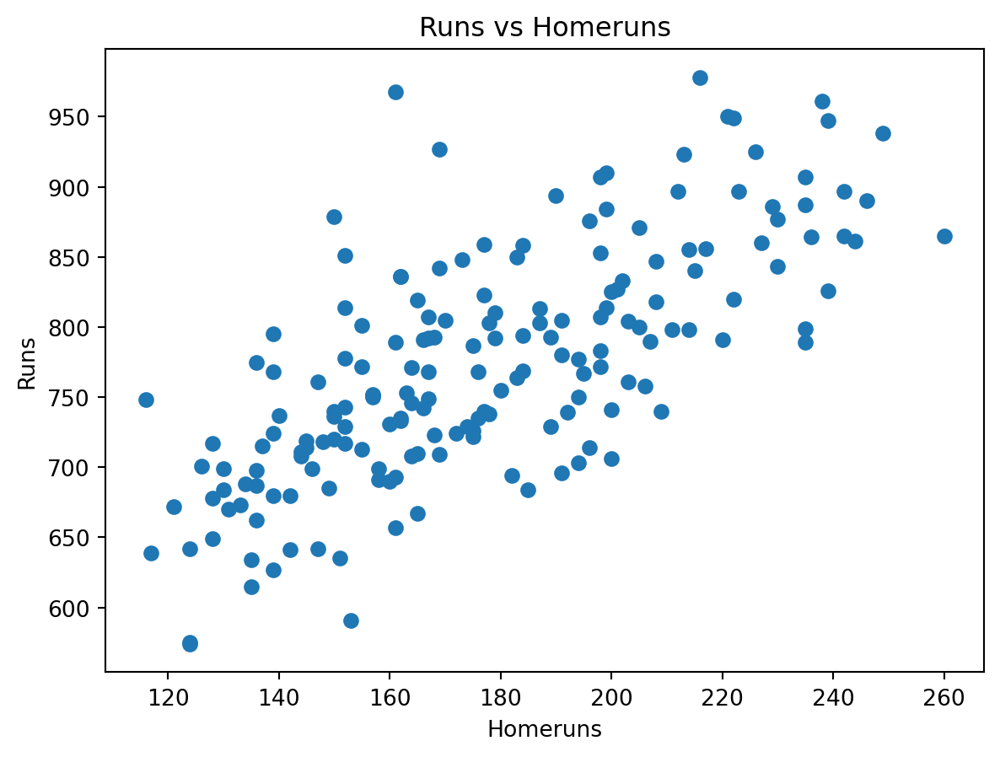

# pandas is used for data manipulation
import pandas as pd
# read data
bbr = pd.read_csv("data/BaseballRuns.csv") Exploring Some Ideas from Bill James
Purpose: Each activity illustrates a little sports analytics, a little statistics, and a little python.
Sports Analytics: Try to explain how runs are scored in baseball — that is, to try to find a statistic that explains as much run scoring as possible.
Statistics: Regression
Python: Introduction to Python, including:
- reading a CSV
- using a notebook
- linear modeling
- plotting
Demonstration — Runs Scored and Homeruns: In this demonstration, we are going to examine the relationship between the number of homeruns hit and the number of runs scored.
Using function terms, we will consider homeruns as the independent variable and runs as the dependent variable. Using statistical terms, homeruns is called the explanatory variable and runs is the response variable.
It may seem arbitrary that we picked runs to be the response variable, but it is not. Ultimately, the goal of offense in baseball is to score as many runs as possible. We are trying to understand how runs are scored — or what statistic best explains how runs are scored — is it homeruns? batting average? stolen bases? or something else?
The data given in BaseballRuns.csv shows offensive statistics for MLB teams from 2000–2005.
Import the data into Python using:
The table of data is now in a data frame called bbr. (Think of a data frame as an array on steroids — where the entries of the array can be objects more complicated than just numbers or strings.)
We can get a summary of what is in this data frame:
bbr.describe()| year | G | Ghome | W | L | R | AB | H | 1B | 2B | 3B | HR | BB | SO | SB | CS | HBP | SF | |
|---|---|---|---|---|---|---|---|---|---|---|---|---|---|---|---|---|---|---|
| count | 180.000000 | 180.000000 | 180.000000 | 180.000000 | 180.000000 | 180.000000 | 180.000000 | 180.000000 | 180.000000 | 180.000000 | 180.000000 | 180.000000 | 180.000000 | 180.000000 | 180.000000 | 180.000000 | 180.000000 | 180.000000 |
| mean | 2002.500000 | 161.922222 | 80.883333 | 80.933333 | 80.933333 | 773.650000 | 5552.950000 | 1472.038889 | 969.650000 | 294.577778 | 30.672222 | 177.138889 | 542.266667 | 1046.816667 | 91.683333 | 40.633333 | 59.455556 | 46.394444 |
| std | 1.712589 | 0.373053 | 0.609744 | 12.510822 | 12.512608 | 83.539137 | 80.080705 | 74.951110 | 56.970979 | 26.225272 | 8.288668 | 33.139246 | 74.503766 | 100.378305 | 30.086927 | 12.056154 | 12.781499 | 9.244353 |
| min | 2000.000000 | 161.000000 | 77.000000 | 43.000000 | 46.000000 | 574.000000 | 5330.000000 | 1300.000000 | 850.000000 | 201.000000 | 12.000000 | 116.000000 | 363.000000 | 805.000000 | 31.000000 | 12.000000 | 29.000000 | 25.000000 |
| 25% | 2001.000000 | 162.000000 | 81.000000 | 71.000000 | 71.000000 | 714.000000 | 5496.750000 | 1422.500000 | 933.000000 | 277.750000 | 25.000000 | 152.000000 | 489.000000 | 984.250000 | 69.000000 | 32.750000 | 51.000000 | 40.000000 |
| 50% | 2002.500000 | 162.000000 | 81.000000 | 82.000000 | 80.000000 | 768.000000 | 5545.000000 | 1470.000000 | 966.500000 | 293.000000 | 30.000000 | 173.500000 | 536.500000 | 1040.500000 | 88.500000 | 40.000000 | 58.000000 | 46.000000 |
| 75% | 2004.000000 | 162.000000 | 81.000000 | 91.000000 | 91.000000 | 828.500000 | 5609.750000 | 1516.500000 | 1000.500000 | 310.250000 | 36.000000 | 200.000000 | 593.500000 | 1099.000000 | 109.250000 | 48.000000 | 67.000000 | 52.000000 |
| max | 2005.000000 | 163.000000 | 82.000000 | 116.000000 | 119.000000 | 978.000000 | 5769.000000 | 1667.000000 | 1186.000000 | 373.000000 | 61.000000 | 260.000000 | 775.000000 | 1399.000000 | 177.000000 | 74.000000 | 95.000000 | 75.000000 |
Variables in the Dataset
lg— league (AL for American League, NL for National League)team— city of team (three-letter abbreviation)G— number of games played (162 is normal)Ghome— number of home games played (81 is normal)W— number of winsL— number of lossesR— number of runs scoredAB— number of at batsX1B— number of singlesX2B— number of doublesX3B— number of triplesHR— number of homerunsBB— number of walksSO— number of strikeoutsSB— number of stolen basesCS— number of times caught stealingHBP— number of batters hit by pitchSF— number of sacrifice flies
Creating and Plotting a Linear Model
To plot HR versus R:
import matplotlib.pyplot as plt
plt.figure()
plt.scatter(bbr["HR"], bbr["R"])
plt.xlabel("Homeruns")
plt.ylabel("Runs")
plt.title("Runs vs Homeruns")
plt.show()
To create the “best-fitting line” for this data:
import statsmodels.formula.api as smf
g = smf.ols("R ~ HR", data=bbr).fit()This stores the line — and much information about this line — in the variable g.
To see the intercept and slope of this line:
g.paramsIntercept 452.358365
HR 1.813784
dtype: float64To add this line to the plot:
plt.figure()
plt.scatter(bbr["HR"], bbr["R"])
plt.xlabel("Homeruns")
plt.ylabel("Runs")
plt.title("Runs vs Homeruns")
# Add regression line
x = bbr["HR"]
y_hat = g.params[0] + g.params[1] * x
plt.plot(x, y_hat)
plt.show()/var/folders/h8/21jh__4x2cg73mtl645922r40000gp/T/ipykernel_18169/3240435530.py:9: FutureWarning: Series.__getitem__ treating keys as positions is deprecated. In a future version, integer keys will always be treated as labels (consistent with DataFrame behavior). To access a value by position, use `ser.iloc[pos]`
y_hat = g.params[0] + g.params[1] * x
What Do We Mean by “Best-Fitting Line”?
The equation for this best-fitting line is:
R = 452.358 + 1.815 · HRWe can use this equation (model) to predict how many runs a team scored based on how many homeruns they hit.
For example, the 2000 Anaheim Angels (ANA) hit 236 homeruns, so our model predicts they scored 880.698 runs. They actually scored 864 runs. The difference between the predicted number of runs and the actual number of runs is called a residual. In this case, the residual is 16.698.
We can use Python to calculate the predicted number of runs scored for each team:
Pred = 452.358 + 1.814 * bbr["HR"]And the residual for each team:
Resid = Pred - bbr["R"]A “best-fitting” line should somehow minimize these residuals — and our line actually minimizes the sum of the squares of the residuals — which is why it is often called the least-squares line.
You can calculate the sum of the squares of the residuals:
sum(Resid * Resid)602493.639948Now try a different line, such as:
R = 410 + 2 · HRThen calculate the predicted values and residuals:
Pred2 = 410 + 2.0 * HR
Resid2 = Pred2 - R
sum(Resid2 * Resid2)The sum of the squares for these residuals will be more than the sum of the squares of the residuals for our original model.
It is also called the regression line.
Important Info Regarding This Linear Model
To get more details about our best-fitting line:
summary(g)A couple of things to note in this summary:
The R-squared value (shown as
Multiple R-squared) is 0.5177. This means that 51.77% of the variation in runs can be explained by the number of homeruns.The Residual standard error is 58.18. This gives us an idea of the size of the average residual — for our purposes, you can think of it as the standard deviation of the residuals.
For example, we would expect about 95% of residuals to be within the interval:
(−2 · 58.18, 2 · 58.18)Group Activity
Consider the following statistics:
BA (batting average):
(1B + 2B + 3B + HR) / ABSLG (slugging percentage):
(1B + 2·2B + 3·3B + 4·HR) / ABOBP (on-base percentage):
(1B + 2B + 3B + HR + BB + HBP) / (AB + BB + HBP + SF)OPS (on-base plus slugging):
OPS = OBP + SLG
Determine the best-fit linear model for each of the following:
- runs versus batting average
- runs versus slugging percentage
- runs versus on-base percentage
- runs versus on-base plus slugging percentage
Be sure each model includes:
- the equation that predicts the number of runs scored
- the R-squared value
- the residual standard error
Use Python to compute these new statistics. For example:
bbr["BA"] = (bbr["1B"] + bbr["2B"] + bbr["3B"] + bbr["HR"]) / bbr["AB"]Now you can use the variable BA to compute your linear model.
Turn in your Python notebook in the appropriate assignment folder.
When You’re Done
Consider the following questions:
What variables can I make by combining these statistics to give a high R-squared value?
Download more recent data from baseballreference.com. Do the R-squared values for our statistics change dramatically?
What is the most predictive (based on R-squared) value that you can make with only 2 columns from your original data frame? What about 3 or 4?
These notes are adapted from Aaron Ekstrom and Abrielle Agron.